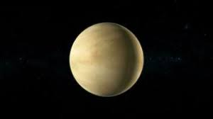
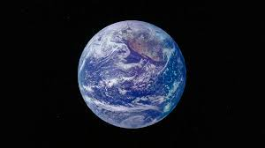
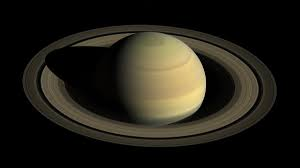
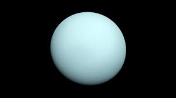

| Venus | Earth | Saturn | Uranus | |
|---|---|---|---|---|
| Images of Venus, Earth, Saturn, and Uranus |  |  |  |  |
| Length of Day (hours) | 2802.0 | 24.0 | 10.7 | 17.2 |
| Distance from Sun (10^6 miles) | 67.2 | 93.0 | 889.8 | 1781.5 |
| Number of Moons | 0 | 1 | 146 | 28 |
| Global Magnetic Field? | No | Yes | Yes | Yes |
| Mean Temperature in Fahrenheit | 867 degrees | 59 degrees | -220 degrees | -320 degrees |
| Orbital Velocity (miles/s) | 21.8 miles/sec | 18.5 miles/sec | 6.0 miles/sec | 4.2 miles/sec |
| Ring System? | No | No | Yes | Yes |